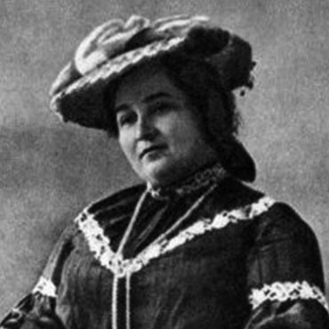
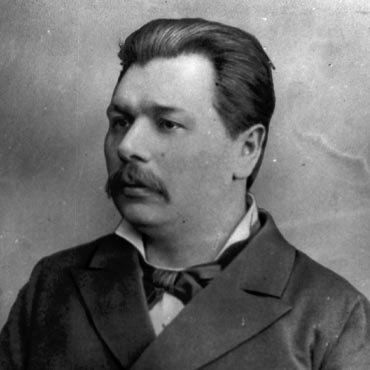

Зупинка ІI
У гостях у Тобілевичів
Літературно-меморіальний музей Івана Карповича Карпенка-Карого (Тобілевича) розміщений у будинку, з яким пов’язано 11 років (1872-1883) життя письменника. У цих стінах він розпочав свою літературну діяльність, написавши оповідання «Новобранець» і дві перші п’єси – «Бурлака» та «Не так пани, як підпанки». Оселя І. Тобілевича стала справжнім осередком мистецького, громадсько-політичного життя міста і пам’ятає імена видатних діячів українського театру Миколи Садовського, Панаса Саксаганського, Марії Садовської-Барілотті, Марка Кропивницького, Марії Заньковецької, Михайла Старицького та ін.
Для нащадків збережено прижиттєві видання творів І. К. Карпенка-Карого (1886, 1903 і 1906 років), рідкісні видання драматурга, які датуються 1917-1941 роками, що побачили світ у різних містах України і навіть за кордоном. У фондах музею зберігаються оригінальні фото та листовні картки корифеїв українського театру І. Карпенка-Карого, М. Садовського, М. Садовської-Барілотті, М. Кропивницького, М. Заньковецької, а також спільні фото акторів та світлини вистав.
У найважчі для української культури часи вони всіляко її підтримували і захищали, тож наш обов’язок – гідно представити здобутки української театральної еліти демонструючи музейні матеріали, пов’язані із життєписом, творчим надбанням та громадською діяльністю корифеїв українського театру.
Свого часу ці предмети були придбані музейниками або подаровані відомими краєзнавцями, діячами культури та мистецтва з різних міст України. У кожного із них своя історія, гідна окремої розповіді. І кожен із них є живим свідченням здобутків корифеїв українського професійного театру.

Твори І. К. Карпенка-Карого
із зібрання музею:
Прижиттєві видання
-
Збирныкъ драматычныхъ творивъ
Рідкісні видання творів І. К. Карпенка-Карого:
із зібрання музею

Оригінальні фото та листовні картки:
із зібрання музею


Рідкісні друковані видання:
із зібрання музею

{kind=link}
{kind=link}
{kind=link}
{kind=link}
{kind=link}
{kind=link}
{kind=link}
{kind=link}
{kind=link}
{kind=link}
{kind=link}
{kind=link}
{kind=link}
{kind=link}
{kind=link}
{kind=link}
{kind=link}
{kind=link}
Віртуальні виставки музею про крифеїв першого професійного українського театру
З іншими тематичними інформаційно-просвітницькими проєктами музею можна ознайомитись тут:

«На добро громаді»
У 2020 році 15 жовтня виповнилось 160 років від дня народження співачки, актриси, мемуаристки, перекладачки, фольклористки Софії Віталіївни Тобілевич. Вона стала не тільки дружиною видатного драматурга І. К. Карпенка-Карого, а й його справжнім другом, порадником, його музою.

Марко Кропивницький і будинок Тобілевичів
22 травня (за офіційними документами) 1840 року народився визначний актор, драматург, один з фундаторів українського професійного театру Марко Лукич Кропивницький. У липні 2016 року Кіровоград було перейменовано на Кропивницький. А чи багато будівель у місті над Інгулом і досі пам’ятають корифея?

Україна квітне в вишиванці
Душа у вишиванці» − таку назву має проект, започаткований літературно-меморіальним музеєм І. К. Карпенка-Карого. Минулого року було відкрито фотозону «Вишивала дівчина вишиванку», де представлені вишиті сорочки та рушники з різних регіонів України і нашого краю.
Інші зупинки на мапі


Державний архів Кіровоградської області
ДАКірО функціонує з 1925 року. У фондах архіву зберігається понад 1,6 млн. од. архівних документів з другої половини ХVІІІ ст., які висвітлюють економічний, політичний і культурний розвиток Єлисаветградського, Олександрійського та Бобринецького повітів Херсонської губернії, історію м. Кропивницький, розкривають деякі сторони громадського життя та побуту населення краю, а також містять відомості про відомих особистостей, у тому числі корифеїв українського театру: Марка Кропивницького, Івана Карпенка-Карого, Миколи Садовського, Панаса Саксаганського, Михайла Старицького, Єфросинії Зарницької, Марії Заньковецької та інших.
сторінка архіву Картинна галерея Петра Оссовського «Світ і Вітчизна»
Картинна галерея Петра Оссовського «Світ і Вітчизна» (відділ КЗ «Музей мистецтв Кіровоградської обласної ради») була відкрита 18 травня 2007 року. Твори художника зберігаються та експонуються в провідних музеях України і світу, а також в численних закордонних колекціях. Проте картинна галерея «Світ і Вітчизна» є однією з кращих збірок творів митця. Вона стала своєрідним подарунком художника своїй Батьківщині, мешканцям та гостям краю, адже видатний художник-земляк, один з основоположників «суворого стилю» в мистецтві, Петро Павлович Оссовський (1925-2015) народився в с. Мала Виска на Кіровоградщині. Він є нащадком славетних українських акторів Дмитра Гайдамаки та Юлії Шестаківської.
Славні традиції корифеїв понесли у світ стаціонарний український театр Садовського у Києві та професійні українські трупи, у тому числі, трупа визначного українського театрального діяча Дмитра Абрамовича Гайдамаки – Вертепова (1864-1936), який був одним із учнів та соратників Марка Лукича Кропивницького.
сторінка галереї

Меморіальний музей М. Л. Кропивницького
Меморіальний музей Марка Кропивницького – пам’ятка історії місцевого значення. Цей житловий будинок XIX століття на розі вулиць Марка Кропивницького та Миколи Смоленчука вагомий історичною пам’яттю не лише тому, що нині максимально близький до свого первозданного вигляду, але й завдяки подіям, свідком яких став. Саме з ним пов’язаний 20-річний період життя Марка Кропивницького – людини, що увійшла в історію національної культури як блискучий актор, режисер-новатор, драматург та композитор, реформатор української сцени, антрепренер та педагог.
Меморіальний музей М. Л. Кропивницького розповідає про здобутки митця, діяльність Театру корифеїв та їхніх послідовників. Також тут можна побачити меблеві гарнітури та речі побуту родини Кропивницьких та М. Старицького, світлини, афіші вистав Кропивницького за різні роки та різноманітні тематичні виставки.
У жовтні 2022 року Меморіальний музей М. Л. Кропивницького святкує свій 40-річний ювілей.
сторінка музею Обласна універсальна наукова бібліотека
імені Д. І. Чижевського
імені Д. І. Чижевського
Бібліотека веде свою історію з 1899 року. Обсяг фондів — понад 775 тисяч одиниць зберігання. Це унікальне зібрання джерел інформації, що включає книги, періодичні та серіальні видання, карти, ноти, та інші образотворчі видання, рукописи, стародруки, документи на нетрадиційних носіях інформації на різних мовах світу. Складові фондів – бібліотечна колекція Олександра Ільїна, подаровані книги від Канадського Товариства Приятелів України, від Об'єднання поляків Кіровоградщини «Полонія», колекції книг В. Панченко, С. Барабаш, А. Пивовара тощо. Також, у фондах ОУНБ ім. Д. І. Чижевського зберігається чимало видань корифеїв українського театру та досліджень їхньої творчості.
сторінка бібліотеки

Кропивницький академічний український музично-драматичний театр ім. М. Л. Кропивницького
Кіровоградський академічний український музично-драматичний театр ім. М. Л. Кропивницького – перший професійний український театр, який став колискою театрального мистецтва в Україні.
Офіційною датою заснування українського професійного театру вважається 1882 рік, коли уперше, на сцені саме цього музично-драматичного театру відбулася прем'єра опери «Наталка Полтавка».
Засновником театру був Марко Лукич Кропивницький, що володів усіма театральними професіями. Із Театром корифеїв також пов'язані імена Марії Заньковецької, Панаса Саксаганського, Івана Карпенка-Карого. Сьогодні театр – це шедевр архітектурного та дизайнерського мистецтва.
Інформація про театр
© 2022 Державний архів Кіровоградської області